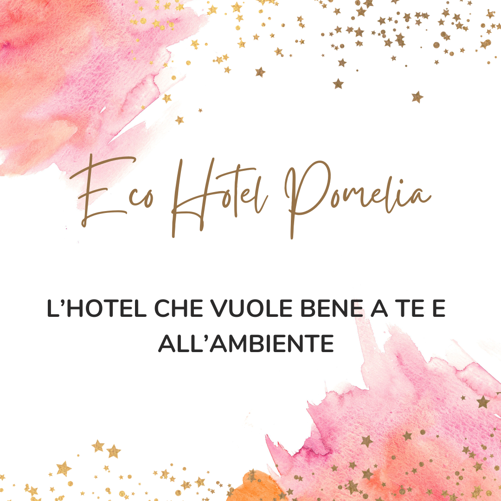

La struttura è a conduzione familiare ed è attiva da 3 generazioni. Da sempre è un punto di riferimento per il turismo ragusano e con il passaggio alla nuova generazione ha subito un profondo rinnovamento in armonia con la natura e le tradizioni del luogo.
Pomelia è il primo hotel in Sicilia ad aver scelto di diventare Società Benefit.
I figli dei fondatori non volevano rinunciare alla tradizione alberghiera di famiglia, ma non volevano nemmeno rinunciare all’innovazione necessaria per ridurre l’impatto sull’ambiente. Per questo motivo hanno deciso di ristrutturare l’hotel rendendolo l’ecostruttura che è oggi.
Contribuire a rendere il turismo più sostenibile e in armonia con la natura.
Creare un ecosistema di turismo responsabile, ridurre l'impatto sul pianeta, contribuire alla crescita e allo sviluppo sostenibile del territorio siciliano
Tutta la struttura è alimentata da energia rinnovabile, in parte autoprodotta da pannelli solari. Le camere sono dotate di arredamenti ricavati da materiali di recupero rielaborati da artigiani e artisti della zona, come comodini, specchi e mobili.
La biancheria dell’intera struttura è stata recentemente sostituita con tessuti in cotone biologico certificato GOTS e canapa, materiale meno impattante e che non rilascia microplastiche con i frequenti lavaggi che sono necessari in un hotel. La biancheria non più utilizzata è stata donata a una Onlus nella zona che ha provveduto a distribuirla a famiglie in necessità.
L’hotel include un servizio colazione, mezza pensione o di pensione completa a seconda del tipo di pernottamento scelto. I piatti serviti nel ristorante sono tutti a km 0, in parte provenienti direttamente dall’orto biologico di proprietà. Tutti gli altri ingredienti provengono da produttori locali.
L’hotel ha a disposizione una spiaggia attrezzata, senza barriere architettoniche e completamente accessibile.
Su richiesta, è possibile organizzare una visita guidata della zona con una guida turistica locale o trekking con una guida escursionistica.
Sempre su prenotazione, si organizzano workshop sulla cucina siciliana e sulla permacultura delle coltivazioni.
La clientela è costituita principalmente da famiglie e giovani coppie.
Seguici su:
contatti: